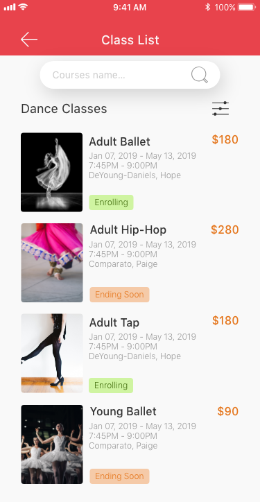

Lawrence Arts Center app design and the lessons I learned — a UX case study
Lawrence Arts Center is our local art institution. It is really enjoyable to take classes there. As a mom, I always check their mobile version website and see if there are any interesting events or classes going on which my kids might be interested in. After checking their mobile version website tons of times, I feel quite tired of typing their website address on my searching bar and getting what I want.
As a UI/UX designer, I always want to improve the user experience of the product that I am using, or at least, hone my designing skills and make some practice. Therefore, I came up with the idea of designing an app for them.
As a user myself, four functions that had been put on the top of the list, ‘Home’ page which include newly updated events and classes; ‘Ticketing’ page which I can purchase tickets for shows; ‘Class’ page which I can enroll the class; and ‘Profile’ page which I am able to find all my personal information.
Let me clarify that the design was purely about UI, there was merely any UX backup for this design. The only UX part was that I immersed myself into the whole design process and thought as a user instead of just a designer.
Also, as an entry-level designer who start the designing from scratch, most of my knowledge coming from website and books, the articles that I read, the blogs that I saved and the useful information that I highlighted using markers. There is no handy working experience. The article was purely the summary and my school of thoughts for designing.
GRID


The first thing of designing was to set up the grid for the whole project. It really took some time and practice to find out what was the best solution. Four columns was suitable for the mobile version design, if it were six, then the screen would looks very busy. For the margin on both sides, I was quite happy with 30 pixels, for the gutter width, it was 18 pixels based on the calculation. My thoughts was that since the app was not a content heavy one, there was no need to leave a very narrow margin on both sides, if it were for a commercial app , most designers would choose to leave a narrower margin when set up the grid, so as to fit in more contents, which would stimulate customers’ lust for shopping and make the screen visually appealing. Basically the more space you leave for both margins, the more minimal the screens will look like.
COLOR
.gif)
I had to confess the fact that I was still struggling with color combination and I was still exploring the possibility of making better color pallet. But I swear that the website palx absolutely save my day! Once you type in the brand color that you are using, the system will present you a full-spectrum color palette which works harmoniously with your brand color.
TYPOGRAPHY
As a newbie, it is quite challenging to choose the best font, but the best design is the one that can exemplify itself. The font that I chose was San Fransisco Pro Text, which looked modern and was the most standard font. There is one trick for choosing the most suitable font, always always test the font for the main body of your paragraphs which takes up most space. There are also a couple of articles that I saved which I learned hugely.
https://medium.com/@lukejones/3-typography-tips-for-a-more-comfortable-read-fed478affa8d https://medium.muz.li/typography-in-mobile-design-15-best-practices-to-excellent-ui-5eaf18280ad https://medium.springboard.com/the-guide-to-getting-typography-right-in-digital-design-bb61214ff3ad https://uxplanet.org/typography-in-ui-guide-for-beginners-7ee9bdbc4833 https://medium.com/product-design-ux-ui/26-digital-typography-rules-for-beginners-a04c6a5aaff3
There is one more thing that you need to pay attention to, if you decide to use SF Pro, once the font size reach 20pt, then the font should be SF Pro Display, instead of SF Pro Text.
ICONS
The biggest difficulty while drawing icons was that once you saved them as png in Illustrator and imported them into your Adobe XD, the icons would look very blurry and lose the pixel. I had tried to draw them in different sizes in aims at exporting them as sharp as possible, but failed. At last, I saved all the icons as SVG format and imported to XD which cracked the nuts! There is a youtube video clip teaching you how to build icon grid that I feel super useful. https://www.youtube.com/watch?v=m24A8lsQWXQ&t=75s
TAKE A CLASS PAGES

My idea for designing ‘take a class page’ was very intuitive, if I were the user who heavily rely on the app to find classes, what I am expecting to see? I boldly assumed that the user would hope seeing the catalog at first sight, which clearly present user what you are expecting.
The first design challenge in this part was the filter page design, how to lay out choices for users that can make it legible while at the same time visually engaging. When I finished design and looked backward at my work, I was not very satisfied with the result, I thought each and every items was visually too big which make the screen look very bulky and busy . Then the other day I read an article and the author mentioned that one tip for filter items designing was that making sure the width of padding left and padding right is twice the size of padding top and padding bottom. As you can see my illustration below. It looked much better and neat since then.
The second design challenge that let me scratch my head was how to align UI elements, for me, was the list of classes page, how do you align names of class, time, location, price and etc..
As I said, I was not quite happy with my list design work, but I did not have a much better idea of how to present the work. Then I tried to find some inspirations online from other people’s work. The app of Expedia was truly inspiring, especially how the designer align all the elements. What I learn from it? Very straightforward, based on the design principle of proximity, the related design elements should be placed together. In this situation, name of the class, time, location and instructor were similar information, while the price of the class was obviously the most different UI element, then it should be singled out.
There is an article about how to align elements that I thought is very useful, https://learnui.design/blog/3-pro-tips-on-alignment.html
TICKETING PAGES AND OTHER PAGES

As you can see, I learned hugely from what I did, even if it was just a practice. Please let me know your thoughts about my design, or you can simply clap your hand.